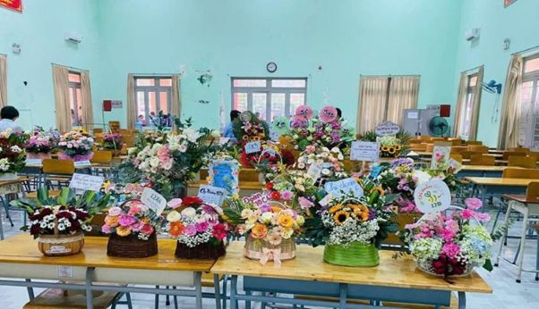
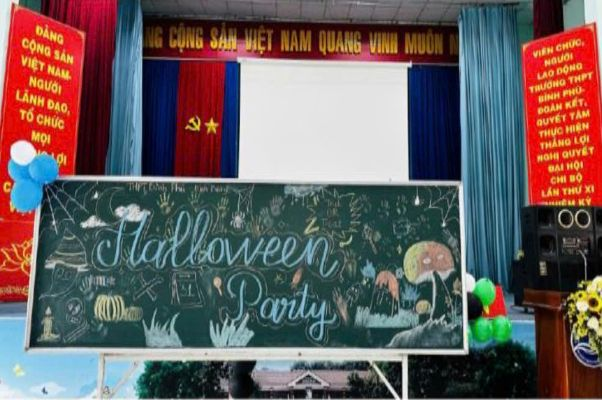
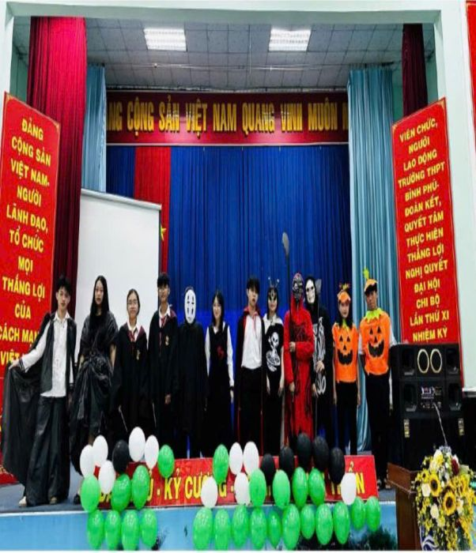

Thời gian thành lập: Từ tháng 6 năm 1973 toạ lạc trên địa bàn khu phố 8, phường Định Hòa, thành phố Thủ Dầu Một, tỉnh Bình Dương.
Ban đầu là Trường Tỉnh Hạt Bình Phú do nhân dân đóng góp xây dựng. Để ghi nhớ sự đoàn kết thống nhất đóng góp chăm lo
cho sự nghiệp giáo dục nên những người sáng lập đã quyết định đặt tên trường là Bình Phú (các xã trên thuộc tổng Bình Phú xưa).
Sau ngày Miền Nam hoàn toàn giải phóng Trường được đổi tên là Trường THPT Bình Phú cho đến nay.
Qua 35 năm hình thành và phát triển, trường THPT Bình Phú đã vượt qua không ít khó khăn và thử thách.
Với sự lãnh đạo của ngành, Chi bộ, Ban Giám Hiệu, tập thể giáo viên công nhân viên từng bước đưa Trường THPT Bình Phú
vượt qua những khó khăn và thực hiện đạt được hiệu quả cao trong nhiệm vụ giáo dục đã được Đảng, chính quyền,
ngành giáo dục và nhân dân địa phương tin tưởng giao phó.

- Ban giám hiệu hiện tại:
- Hiệu trưởng: Nguyễn Thị Tám
- Phó Hiệu trưởng: Nguyễn Văn Ân
- Phó Hiệu trưởng: Phan Hoàng Vũ
- Phó Hiệu trưởng: Đặng Kim Anh
- Đội ngũ giáo viên
Gần 80 giáo viên giảng dạy các môn học theo chương trình giáo dục phổ thông (Toán, Ngữ văn, Tiếng Anh, Vật lý, Hóa học, Sinh học, Lịch sử, Địa lý, Giáo dục thể chất, Tin học, v.v.).

-
Hội Trại
Vào ngày 17, 18/1/2026, Hội trại truyền thống lần thứ IX của trường THPT Bình Phú - Bình Dương đã diễn ra tại Khu du lịch Suối Mơ - Đồng Nai để lại trong lòng mỗi bạn học sinh những cảm xúc khó quên.


-
Ngày nhà giáo
Hòa chung không khí tri ân thầy cô giáo trên cả nước, sáng ngày 20/11, trường THPT Bình Phú – Bình Dương đã tổ chức nhiều hoạt động sôi nổi, ý nghĩa nhằm tôn vinh những người lái đò thầm lặng
 
-
Hoạt Động Của Câu Lạc Bộ
Sáng thứ bảy, ngày 25 tháng 10 năm 2025, tại Hội trường Trường THPT Bình Phú - Bình Dương, Tổ Tiếng Anh đã tổ chức buổi sinh hoạt Câu lạc bộ Tiếng Anh với chủ đề "Halloween Party"
  -
Đồng Diễn Vovinam